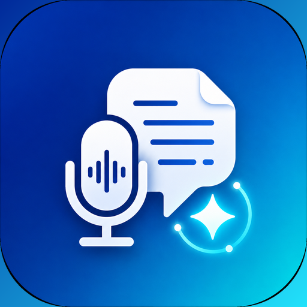

AI Talk Notes ダウンロード
インストール手順
- 上のボタンから APK ファイルをAndroidスマートフォンへダウンロードまたはPCから転送します。
- ファイルアプリなどから APK を開きます。Google Play 以外からのインストールのため、初回は「このアプリのインストールを許可」を求められます。
- 表示にしたがって「提供元不明のアプリ（このソースを許可）」をオンにし、インストールを進めます。
- インストール後、初回起動時にマイク権限を許可すると文字起こしを開始できます。
ご利用にあたって
・アプリ自体は無料です。OpenAI高精度文字起こし・AI相談を使う場合のみ、ご自身のOpenAI APIキーが必要で、API料金はご自身のOpenAIアカウントに発生します。
・旧バージョン（com.example系）を入れている場合は別アプリ扱いになります。必要なログは設定 > エクスポート / バックアップ で保存してから入れ替えてください。
・第三者の会話・個人情報を扱う場合は、録音・送信してよいかをご自身でご判断ください。